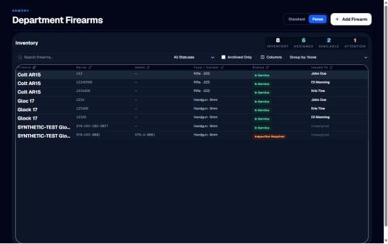
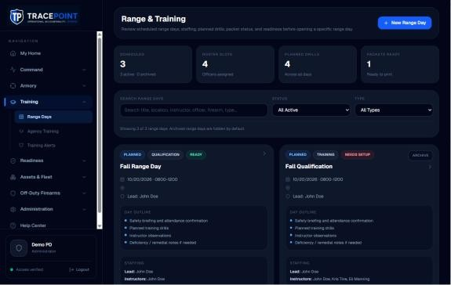
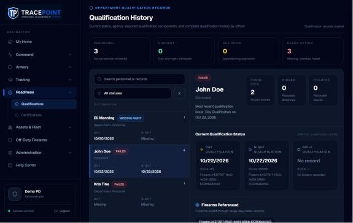
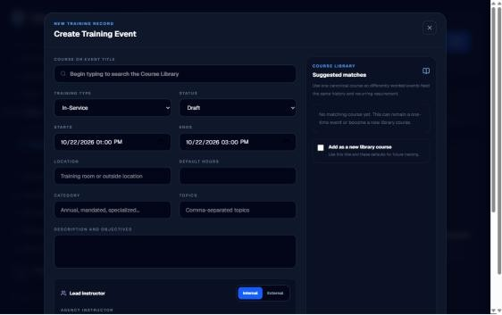
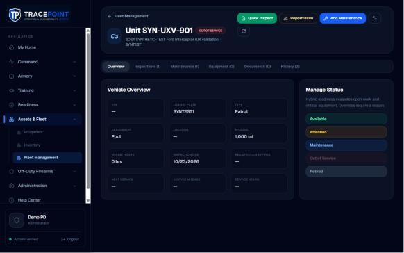
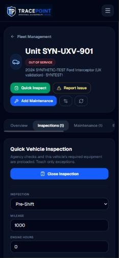
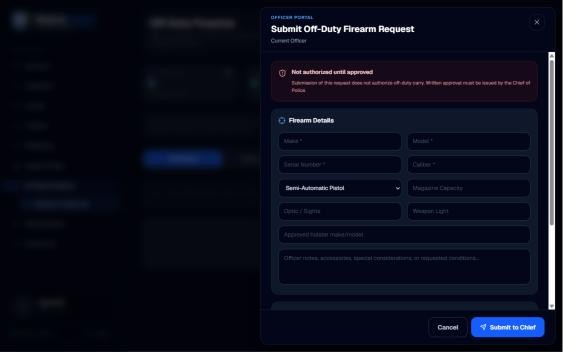
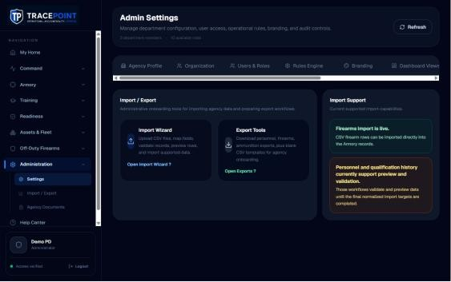

TracePoint Intuitive Workflow & Usability Review
This was read-only. Forms were opened and closed without saving, and no settings or records changed in this pass. Phone results come from browser emulation at 375px, not native iOS or Android. Everything was done as an administrator, so what an officer, instructor or armorer can see still needs checking with those roles. Visual issues are in the Visual Review, and functional defects are in the Validation Handoff. Neither is repeated here.
Summary
TracePoint's individual forms are usually understandable: labels are in plain law-enforcement language, and several flows are thoughtfully designed (Create Training Event, Pre-Range Readiness, the Off-Duty request, the record-page custody explanation). Where it struggles is getting people to the right place and back. Navigation is organized around modules, not jobs. Nothing is personal ("my gear", "my quals", "my approvals"). Records rarely have their own URL. Dashboards point to module home pages instead of the record that needs attention, and several tasks are split across two or three screens.
Primary navigation
- Verified Grouped by system, not by job. An instructor's day spans Training (Range Days), Readiness (Qualifications) and Settings (qualification rules). An armorer's spans Armory, Assets & Fleet (Equipment, Inventory) and Settings (secure storage).
- Verified No personal entry point. "My Home" is an inbox, not a view of the officer's own gear, vehicle, qualifications or requests.
- Code-checked A
/notificationspage exists but isn't in the menu. Users can't find it except by URL. - Verified There's no global search for an officer, serial, unit number or plate. Every lookup starts by picking the right module.
- Verified Menu labels and page titles disagree: "Range Days" opens "Range & Training", "Qualifications" opens "Qualification History", "Requests & Approvals" opens "Off-Duty Firearms".
- Verified Every group is collapsed by default. Reaching any second-level page takes two clicks, or three on a phone including the hamburger.
Simplify: keep the modules, but add "Home / My work" at the top (my gear, my vehicle, my qualifications, my requests, my approvals) and a global search box in a top bar. Expand the active group by default and remember the last state. This doesn't remove any capability.

Workflow measurements
Each task was walked from a realistic starting point as a first-time user. Clicks count deliberate taps and selections; typing a value counts as one. "Screens" counts page changes plus panels that replace the view. Counts are as observed on build 22e543d. Proposed counts are estimates.
| Role · task | Start | Path today | Clicks | Screens | Friction | Proposed path | Est. saved |
|---|---|---|---|---|---|---|---|
| Officer · find my firearms and equipment Role | Home | Armory ▸ Department Firearms ▸ search own name · Assets & Fleet ▸ Equipment ▸ Officer Readiness tab ▸ find self | 7 | 2 | Two modules, department-wide lists, no "mine" filter. Officers may not be allowed to see either list. | "My gear" card on Home lists assigned firearms, equipment and vehicle | −7 |
| Officer · inspect assigned vehicle (phone) | Home | ☰ ▸ Assets & Fleet ▸ Fleet Management ▸ scroll (row at y=861) ▸ row ▸ Quick Inspect ▸ Start Inspection ▸ scroll 2 screens ▸ Submit | 8 | 3 | "Quick Inspect" then a second "Start Inspection". OPEN is three screens to the right. Close is the main button. | QR label or "My vehicle" card ▸ checklist opens directly ▸ sticky Submit | −5 |
| Officer · report a vehicle issue | Home | Path to vehicle (4) ▸ Report Issue ▸ category, priority, what's wrong, details, mileage, hours, safe-to-operate ▸ Submit to Mechanic | 12 | 3 | "Priority" and "Safe to operate" ask the same question. Mileage is re-typed. | From My vehicle: what's wrong, can it be driven?, optional photo. Priority comes from the drivability answer, mileage from the last inspection. | −6 |
| Officer · report an equipment issue Role | Home | No "report issue" action was found on Equipment or Inventory for an individual item | — | — | No visible path. Officers would have to tell someone. | "Report a problem" on each item in My gear | new path |
| Officer · check my qualifications and training | Home | Readiness ▸ Qualifications ▸ find self in list · Readiness ▸ Certifications (agency view) | 5 | 2 | Department views only. Training requirements aren't shown per person. | "My readiness" card: status, due dates, next range day | −5 |
| Officer · act on a notification | Home | Home inbox (failed to load, see handoff SV-05) · /notifications not in the menu · Training Alerts is a separate inbox | — | — | No reliable single place. Even when the inbox works, items open module roots. | One inbox (bell plus Home) where each item opens its record | −2 per item |
| Instructor · create a range day, roster 3 officers, score 1 drill (Day and Night runs) | Range Days | New Range Day (record saved immediately) ▸ details ▸ Roster: 3 × (select, Add, firearm, Present) ▸ Drills ▸ Add Drill ▸ Add to day ▸ Scoring ▸ drill ▸ run ▸ 3 scores ▸ Save ▸ run ▸ 3 scores ▸ Save | ≈30 | 5 tabs | Roster is one officer at a time. Each officer's duty firearm is picked by hand. Drills are re-added every time. | Multi-select roster, duty firearms filled in, "Mark all present", day templates that bring their standard drills | −12 to −15 |
| Instructor · correct a saved score | Scoring | Edit the score ▸ Save. The save is refused silently (handoff SV-01). Results tab is read-only. | 2 | 1 | No "edit result" affordance or reason field, so correction feels like overwriting. | "Correct result" on the Results row with a reason and history | clarity |
| Instructor · close out a range day | Range day | Overview ▸ Status dropdown ▸ Completed (or Locked) ▸ Save Range Day | 3 | 1 | No finalize step showing unscored officers or open drills. "Locked" isn't explained. | "Close range day" button opens a summary (unscored, failures, remediation), then Confirm | ±0, safer |
| Armorer · find a firearm and move it to secure storage | Firearms | Search ▸ select row ▸ scroll to the detail panel below the table. Custody transfer lives only on the record page, which the list doesn't link to for ordinary firearms. | 3 + URL | 2 | The record page can be found only from the inspection queue or by URL. | The row opens the record page (or a drawer with a "Full record" link) | unblocks |
| Armorer · set up secure storage before the first transfer | Custody form | Read "ask an armory administrator" ▸ Administration ▸ Settings ▸ Rules Engine ▸ Armory ▸ scroll to Secure Storage ▸ add | 6 | 3 | Setup is buried in policy rules, with no link from the custody screen. | "Manage locations" link in the custody form, or inline add | −5 |
| Armorer · inspect a firearm | Armory | Maintenance & Inspections ▸ New Inspection ▸ choose the firearm from all firearms ▸ 19 items ▸ Save | 22+ | 2 | Starting from the firearm record pre-selects it, but that record is hard to reach. Inspection history isn't shown afterwards. | "Inspect" on the firearm row. Checklist marks failures only. History is visible on the record. | −2 |
| Armorer · reconcile ammunition | Armory | Reconciliation (blank page) or Ammunition ▸ Physical Count tab | 2 | 1–2 | Two homes for counting. The one named "Reconciliation" is empty. | One "Count & reconcile" view inside Ammunition | −1, clarity |
| Supervisor · find what needs attention | Home | Home inbox · Command Pulse attention list · Training Alerts. Each counts differently (handoff SV-04 to SV-08). | 3–5 | 3 | No single source of truth. | One attention list on Home and Command Pulse, opening records | −3 |
| Supervisor · go from a dashboard item to the record | Command Pulse | Item ▸ module home ▸ search the officer ▸ select ▸ read | 4 | 2 | The link drops the context. | Item ▸ record | −3 |
| Chief · find pending approvals | Home | Off-Duty Firearms ▸ Requests & Approvals ▸ Department Review tab · Armory ▸ Personally Owned Rifles ▸ Review Queue · Home "Approvals" tile | 6 | 3 | Approvals live in two module groups. The Home tile relies on the broken inbox. | One "Approvals" queue (off-duty, rifle program, return-to-service, remediation sign-off) | −4 |
| Admin · change a module rule | Settings | Settings ▸ Rules Engine ▸ module tab ▸ edit ▸ panel Save (the header Save loses the change, handoff SV-29) | 4 | 1 | Two Save buttons. Some rules also live inside modules (Ammunition defaults, rifle program settings). | One location per rule, one Save, a link from the module to its rules | clarity |
| Admin · import personnel | Admin | Import / Export (menu) ▸ wizard ▸ pick 1 of 3 importers · or Settings ▸ Import / Export tab ▸ "Open Import Wizard ?" | 3 | 2 | Three entry points. Contradictory "personnel import is live" versus "preview only" messages. | One Import page that states clearly what each importer can commit | −1, trust |
| Admin · manage a user's access | Settings | Settings ▸ Users & Roles ▸ Edit Access (ranks and units in a separate Organization tab) | 3 | 1 | Reasonable. Rank and unit assignment are separated from the person. | Person page: roles, rank, unit, assigned gear | −1 |
Module scorecard: the twelve questions
Each column is one of the brief's questions: ✓ yes, ~ partly, ✗ no. For "buried actions", "extra steps" and "redundant controls", ✓ means the problem is absent.
| Module | 1 Purpose | 2 Primary | 3 First use | 4 Organized | 5 Not buried | 6 Lean | 7 Form order | 8 Terms | 9 No dupes | 10 Role fit | 11 Responsive | 12 Simplify by |
|---|---|---|---|---|---|---|---|---|---|---|---|---|
| My Home | ~ | ✗ | ~ | ~ | ~ | ~ | — | ✓ | ~ | ✗ | ~ | Personal cards (gear, vehicle, readiness, requests) above the inbox |
| Command Pulse | ✓ | ~ | ✓ | ~ | ✓ | ✗ | — | ~ | ~ | ✓ | ~ | Action list first, and items open records |
| Analytics | ✓ | ~ | ~ | ✓ | ✓ | ✓ | — | ~ | ~ | ✓ | ~ | Merge "How signals are interpreted" into tooltips |
| Dept Firearms | ✓ | ✓ | ~ | ~ | ✗ | ~ | ~ | ~ | ~ | ~ | ✗ | Row opens the record. Explain or drop Standard/Focus. Surface Edit and Status. |
| Maint. & Inspections | ~ | ✓ | ~ | ~ | ~ | ✗ | ~ | ✓ | ✓ | ✓ | ~ | Checklist marks failures only. Show history. |
| Ammunition | ✓ | ~ | ~ | ~ | ~ | ~ | ~ | ✓ | ✗ | ✓ | ~ | Merge Reconciliation into Physical Count. Move defaults to Settings. |
| Personal Rifles | ✓ | ~ | ~ | ✓ | ✓ | ✓ | — | ✓ | ✗ | ~ | ~ | One Program Settings location. Hide actions while disabled. |
| Range Days | ✓ | ✓ | ~ | ~ | ~ | ✗ | ~ | ~ | ~ | ✓ | ~ | Templates, bulk roster, "Close range day", URLs |
| Qualifications | ✓ | — | ✓ | ✓ | ✓ | ✓ | — | ~ | ✓ | ~ | ~ | "My qualifications" view for officers |
| Certifications | ✓ | ✗ | ✗ | ~ | ~ | ~ | ~ | ✓ | ~ | ~ | ~ | "Add Certification" opens a setup prompt when no types exist |
| Agency Training | ✓ | ✓ | ✓ | ✓ | ✓ | ✓ | ✓ | ✓ | ~ | ✓ | ~ | Clarify how it differs from Training-type range days |
| Training Alerts | ✓ | ~ | ~ | ~ | ✓ | ~ | — | ~ | ✗ | ✓ | ~ | Fold into the single inbox. One "Review" action. |
| Fleet Management | ✓ | ✓ | ~ | ~ | ~ | ~ | ~ | ~ | ~ | ~ | ✗ | Card list on phone. The row is the link. |
| Vehicle record | ✓ | ~ | ~ | ✓ | ✓ | ✗ | ~ | ~ | ✗ | ~ | ✗ | One "Inspect" primary. Merge Priority and Safety. Status change through a sheet. |
| Equipment | ✓ | ~ | ✗ | ~ | ~ | ~ | ✗ | ~ | ~ | ~ | ~ | Guided setup: type, then requirement, then item |
| Inventory | ~ | ~ | ✗ | ✗ | ✗ | ~ | ✗ | ~ | ~ | ~ | ~ | Locations out of the More menu. Actions open sheets. |
| Agency Documents | ~ | ✗ | ✗ | ~ | ✗ | ~ | — | ~ | ✗ | ~ | ~ | "Use template" on each published row |
| Off-Duty Firearms | ✓ | ✓ | ✓ | ✓ | ✓ | ✓ | ✓ | ✓ | ~ | ✓ | ~ | Remove the system-explanation paragraph |
| Settings & Rules | ✓ | ✗ | ~ | ~ | ✗ | ~ | ✓ | ~ | ✗ | ~ | ✗ | Left rail. One Save per panel. Personal settings out. |
| Import / Export | ✓ | ~ | ~ | ~ | ✓ | ~ | ✓ | ~ | ✗ | ✓ | ~ | One entry point, honest capability labels |
| Help Center | ✓ | ✓ | ✓ | ✓ | ✓ | ✓ | — | ✓ | ✓ | ✓ | ✓ | Link guides from the screens they describe |
Module findings
My Home & notifications
- Verified Five summary tiles (Open actions, Critical/High, Approvals, Upcoming range, Due/Expiring), each with "Filter Inbox", then a "Priority Action Queue". That's a good idea, but it's the same inbox five times, and none of it is about the officer's own equipment or status.
- Verified A "Command Dashboard" button sits on Home for command users, so Home and Command Pulse compete as the place to start.
- Code-checked The full
/notificationspage exists but has no menu link or bell. - Needs testing What an officer's Home shows. I didn't reload Home in this pass because each load writes notification records (handoff SV-05).
Command Pulse & Analytics
- Verified Customize Dashboard is a good in-place builder (live preview, card sizes, add or remove, cancel or save). It changes the agency's dashboard, though, and nothing says so on the button.
- Verified Settings ▸ Dashboard Views only links back to Customize Dashboard and Customize Analytics. It's an extra hop with no settings of its own.
- Verified Attention items and tiles open module home pages, so every follow-up starts with a search.
Armory: Firearms, Inspections, Ammunition, Personally Owned Rifles

- Verified The firearm record page can't be reached from the list. In Standard mode the detail panel opens below the table with no "Full record" link for an ordinary firearm. In Focus mode, clicking a row does nothing visible. Custody transfer, inspection history and New Inspection for one firearm all live on that page.
- Verified The Standard / Focus toggle is unexplained, and the two modes have different toolbars ("Group: None" vs "Group by: None", sort select vs header sort).
- Verified The record page explains assignment versus physical custody well ("Who the firearm is assigned to. Physical custody is tracked separately." / "Where the firearm is right now. Changing custody never changes assignment."). Show that wording wherever custody appears.
- Verified Ammunition has five tabs with no URLs. Receiving a lot means 13 fields, with the ammunition type a prerequisite on another tab. "Agency Defaults" (verification schedules) live inside the module, not in Settings.
- Verified Reconciliation is a blank page (a title and one sentence, no empty state or action), while the actual counting lives on Ammunition ▸ Physical Count.
- Verified Personally Owned Rifles has Program Settings that duplicate Settings ▸ Rules Engine ▸ Armory ▸ "Personally Owned Rifle Program".
Range Days & Qualifications


- Verified Attendance and scoring are clear once you find them. Roster ("Officers and firearms") and Scoring ("Live entry board") tabs are labelled with purpose lines, and Quick Actions on Overview jump to them. Pre-Range Readiness is excellent.
- Verified Roster building is one officer at a time (select, Add Officer, choose firearm, Mark Present). Duty firearms already assigned in Armory aren't filled in.
- Verified Qualification requirements aren't visible where scoring happens. Cycles and validity live in Settings ▸ Rules Engine ▸ Range & Qualifications, and the scoring board shows no pass threshold.
- Verified No completion step. Finishing a day means changing a Status dropdown and pressing Save. Nothing summarizes unscored officers or what "Locked" means.
- Verified "Range & Training" range days of type "Training" overlap with Agency Training events, and the screens don't explain when to use which.
Training, Certifications & Training Alerts

- Verified Agency Training's create flow is the best in the product: a dialog, smart defaults (today, 2-hour block, Draft), course-library matching, and nothing saved until confirmed. Range Days and Equipment should copy it.
- Verified Certifications: "Add Certification" silently does nothing when no certification types exist. The only clue is a sentence elsewhere on the page.
- Verified Training Alerts is a second inbox with its own Acknowledge / Create Remediation / Resolve. Suggested review roles are shown, but alerts aren't routed (the page says so).
Fleet Management


- Verified To start an inspection: "Quick Inspect" (or the Inspections tab), then "Start Inspection". That's two buttons for one intent, and the second one turns into "Close Inspection" as the panel's main button.
- Verified Report Issue asks for Priority (Normal/High/Critical) and separately Safe to operate (Safe/Limited/Unsafe), and ends with "Submit to Mechanic" in an agency with no mechanic role assigned.
- Verified The "Manage Status" panel changes status with one tap on colored pills. Out of Service and Retired sit beside Available with no confirmation step visible before the reason prompt.
- Verified On a phone, the vehicle list is a desktop table. Tapping the row works, but nothing shows it can be tapped. The visible "OPEN" is three screens to the right.
Equipment & Inventory
- Verified Equipment depends on an unexplained order. Both main actions ("Requirement", "Assign/Add to Inventory") need an equipment type, created through a small "Add" in a separate Types bar. With no types the selectors are just empty.
- Verified The Assign form has 16 fields with no grouping by what you know at issue time (who, what, serial) versus maintenance data (lot, inspections).
- Verified Inventory's first-run path is broken for a new user. Receiving stock needs a location, and "Add location" is inside "More". The permanent Checkout form shows even with no stock.
- Verified Three stock systems (Equipment, Inventory, Ammunition) in two menu groups. The page subtitles explain the differences, but the menu doesn't.
Agency Documents
- Verified "Generate Document" ▸ "Choose template" just scrolls to the template list, which offers Edit, Publish/Unpublish, Duplicate and Archive but no "Use" action. The primary purpose of the screen can't be found.
- Verified The Template Builder's numbered steps ("Set up automatically → Decide fields → Check placement → Publish") are clear and should stay.
Off-Duty Firearms

- Verified The best end-to-end officer form. "Not authorized until approved" sets expectations, fields follow how people think (firearm, accessories, acknowledgements), and the action says who receives it.
- Verified Placeholder-only fields ("Make *") lose their label once typed in. The panel title says "Current Officer" instead of the user's name.
- Needs testing The officer and Chief views under real role accounts.
Settings, Rules Engine & Import

- Verified Duplicate configuration screens:
- rifle program (module and Settings)
- ammunition defaults (module only, not in Settings)
- Import / Export (menu item and Settings tab)
- dashboards (Settings tab that only links to the builders)
- secure storage (inside policy rules)
- Verified Audit & Security offers "MFA required by department policy" and says "Authentication enforcement will be connected as the security layer is completed." An administrator could reasonably believe MFA is enforced.
- Verified Import messaging contradicts itself. The wizard says personnel and qualification history "import directly into normalized TracePoint records". The Settings tab says they "currently support preview and validation". The links show a broken "?" glyph.
- Verified Organization explains clearly how ranks and units differ from security roles, which is a good model for other explanatory copy.
Phone & tablet workflows

- Verified Field workflows at 375px: inspection Pass/Defect/Critical buttons are 41×23px. Submit is at y≈1,750. The vehicle list row starts below the fold (y=861).
- Verified Scoring at 375px works best of all. Large score inputs, a decimal keypad and a sticky Save bar. Use it as the pattern for inspections.
- Verified Tablet at 768px: navigation collapses into the hamburger. Range and armory tablets lose one-tap module switching.
- Needs testing Native iOS and Android behavior (keyboard covering sticky bars, camera upload for Target Evidence, QR scan to vehicle) wasn't tested. This was browser emulation only.
Terminology
Most labels are plain and police-appropriate. These ones confuse:
| Today | Where | Problem | Suggest |
|---|---|---|---|
| Command Pulse / Command Dashboard | Title vs menu | Two names for one screen | Command Dashboard |
| Range & Training / Range Days | Title vs menu | The title implies Agency Training lives here too | Range Days |
| Standard / Focus | Firearms | Doesn't say what changes | "Show menu" / "Full-width table", or remove |
| Packet status | Range day | Means "printed range packet ready". Easy to read as an evidence packet. | Range packet ready |
| Hybrid readiness · "Current status is authoritative until automated inspection rules are enabled" | Fleet | System jargon | "Status updates automatically from inspections and repairs." |
| Pooled stock · Standing total | Inventory, Ammunition | Quartermaster terms that aren't explained | Shared supplies · On hand |
| Restricted (custody tab) | Firearms | Could mean restricted duty, a restricted weapon or restricted access | Duty restrictions |
| Requirement / Assign/Add to Inventory | Equipment | The slash label hides two different actions | Add item · Issue to officer · Set required gear |
Prioritized usability fixes
Ordered by effort saved for the most people. None of them removes a capability.
- Every list row and dashboard item opens its record, and records have URLsFirearms, Range Days, Fleet, Command Pulse, Training Alerts. Unblocks custody and inspection for armorers. Saves 3–4 clicks per follow-up.High · M
- "My work" on HomeMy gear, my vehicle (Inspect / Report), my readiness, my requests, my approvals. Officers' core tasks drop from 5–8 clicks to 1–2.High · M
- One attention inboxMerge the Home inbox, Command Pulse attention and Training Alerts into one list. Add a bell in the shell and a menu link toHigh · M
/notifications. - One approvals queue for commandOff-duty, rifle program and remediation sign-off in one place.High · M
- Field-grade inspection flowOne "Inspect" action. The checklist opens directly. 44px Pass/Defect targets. Only defects need input. Sticky Submit.High · S–M
- Range day setup acceleratorsMulti-select roster, duty firearms filled in, "Mark all present", day templates with standard drills, and a "Close range day" summary. About 12–15 fewer clicks per day.High · M
- Create flows don't save until confirmedRange Days uses the Agency Training dialog pattern. No more junk "New Range Day" records.Med · S
- One home per configurationMove rifle program, ammunition defaults and secure storage into Settings ▸ module, with "Manage" links from the module. Remove the Dashboard Views tab.Med · S
- Guided first-run setupEquipment (types → requirements → items), Inventory (location → item → receive), Certifications (type → requirement). Empty states that show the next step.Med · S
- Global searchOfficer, serial, asset tag, unit number, plate, all from the top bar.Med · M
- Honest status copyMFA "recorded, not yet enforced". Import capability stated once. Remove developer and system notes from the screens.High · S
- Agency Documents: "Use template" on each published rowRestores the screen's primary purpose.High · S
- Merge Reconciliation into Ammunition ▸ CountOne place to count and reconcile.Low · S
- Shorter issue reportingOne severity question, mileage carried over, "Submit" routes to whoever owns fleet repairs.Med · S
- Align menu labels, page titles and termsSee the terminology table.Low · S
Needs more testing
- Role Officer, Instructor, Armorer, Fleet Manager and Supervisor accounts: menu visibility, Home contents, whether officers can see Department Firearms and Equipment, Off-Duty submit and approve end to end.
- Device Native iOS and Android: keyboard and sticky bars, camera evidence, QR label scan to the vehicle record.
- Data Large agencies (200+ firearms, 60 vehicles, 100 officers): filter performance, roster building, list density.
- Approval Notification inbox behavior after the development fix for SV-05, which this review couldn't exercise safely.
- Usability Five-task moderated sessions with one officer, one instructor and one armorer from a pilot agency, to confirm the step-count estimates.